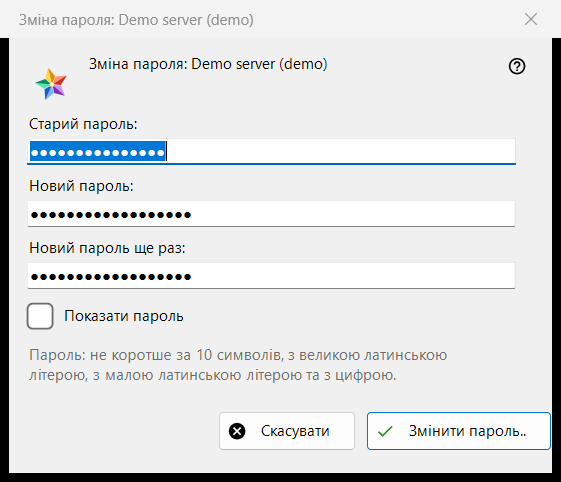
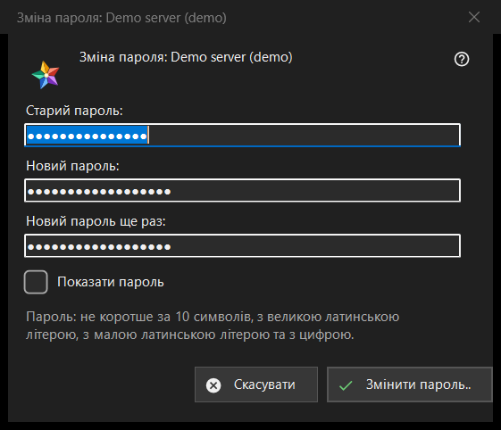

Зміна пароля
Призначення
Змінює пароль вашого облікового запису на сервері обміну. Вікно відкривається кнопкою «Змінити пароль..» запису сервера в розділі «Мої пристрої» списку ресурсів; кнопка видима, поки сервер на зв'язку. У заголовку названо обліковий запис.


Порядок дій
- Введіть старий пароль.
- Двічі введіть новий пароль.
- Натисніть «Змінити пароль..»; «Скасувати» закриває вікно, нічого не надсилаючи.
Елементи вікна
Три поля
«Старий пароль:», «Новий пароль:» і «Новий пароль ще раз:»; «Показати пароль» їх показує. Під час закриття вікна поля стираються. Вікно лише збирає паролі: надсилає їх серверу переглядач з'єднанням цього запису.
Правило для пароля
Пояснення каже: не коротше за 10 символів, з великою та малою латинськими літерами й цифрою. Вікно перевіряє це до надсилання й називає, чого бракує, наприклад «Пароль коротший за 10 символів.» або «У паролі немає цифри.»; крім того, воно каже «Вкажіть старий пароль.» і «Паролі у двох полях не збіглися.». Сервер застосовує те саме правило, і останнє слово за ним.
Після зміни
У разі успіху стан повідомляє «Пароль змінено. Цей комп'ютер продовжує працювати, а інші пристрої облікового запису повинні увійти заново.» Відмови: старий пароль не підійшов; забагато спроб (зачекайте хвилину й повторіть); сервер відмовив у зміні; немає зв'язку із сервером (підключіться й повторіть).